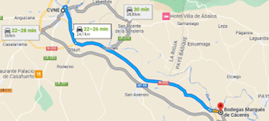

9h15 Départ pour une journée vinotreck (1h30 de route)
10h50 Dégustation à 11h en anglais
Bodega CVNE - (Haro)
La Compañía Vinícola del Norte de España (CVNE), fondée en 1879 à La Rioja, possède des grottes qui sont visibles, mais aussi l'impressionnante salle de conservation à l'architecture réalisée par l'étude de Gustave Eiffel fin 19ème. Sa marque la plus prestigieuse est l'Imperial. Celle-ci a été récompensée en 2013 comme le meilleur vin du monde.
Après cinq générations, la même famille reste à la tête de cette cave centenaire, qui propose une visite inoubliable de son propre village viticole, le cuvier Real de Asúa, l'impressionnant chai à barriques conçu par le légendaire architecte Gustave Eiffel, une bouteille cimetière avec des joyaux authentiques pour les amateurs de vin et la Casa Jardín, où vous pourrez dîner sur réservation.
Au cœur du Barrio de la Estación à Haro, la capitale du vin, mêlant tradition et innovation, sont produits les vins Cune, Imperial, Real de Asúa, Monopole et Corona.
Visite de 60 min. + 30 minutes de dégustation - 20€/personne

fin à 12h30 + 20' déplacement = chaud chaud chaud pour arriver à 12h50 à la dégust. suivante !
12h50 Dégustation dans une bodega moderne (techniques plus actuelles et production en plus grande quantité) à 13h en anglais

Bodega Marques de Caceres (Cenicero)
La Bodega Marques de Caceres est une bodega récente, fondée en 1970. Son fondateur, avec sa vaste expérience acquise à Bordeaux où il possédait 2 châteaux. Il révolutionna le concept du vin de Rioja en utilisant un modèle d'entreprise axé exclusivement sur la qualité. Aujourd'hui, ce vin est distribué dans plus de 120 pays.
Don Vicente Noguera Espinosa de los Monteros, Marquis de Caceres céda son nom à la marque.
Visite de 1h15 - 18€/personne
La visite comprend une visite guidée de la cave et une dégustation de 3 vins (ANTEA fermenté blanc en barrique, Gran Reserva et Gaudium) avec dégustation de fromage semi-affiné de la région de Cameros.
14h30 Lunch ou aller boire un verre à la
Bodega Ysios (Laguardia)
Découvrez le bar à vin Ysios et des vins exclusifs !
Au sein du chai à barriques vous vous plongerez dans la dimension architecturale d'avant-garde tout en profitant de nos collections limitées.
Aucun rendez-vous n'est nécessaire. Service disponible du lundi au dimanche selon disponibilité des horaires et capacité du domaine viticole. Il est généralement ouvert de 10h à 16h30.
De 14h00 à 16h30, vous accéderez au Laguardia Lounge, un lieu unique avec vue sur un paysage unique accompagné d'un verre de vin
15h50Rendez-vous chez le marquis de Riscal où nous sommes attendus à 16h en espagnol
Marques de Riscal (Elciego)
Visite de notre cave fondée en 1858 et vignoble à Elciego.
Visite 2 avec dégustation
- Finca Montico
- Finca Torrea
- Marqués de Riscal Gran Reserva
- Snacks de fromage, chorizo et saucisse de la Rioja
Visite de 1h45 - 36€/personne
18h30 Retour à Bilbao (1h30 de route)
20h Tiendastherapy
20h30 Apéro Winebar à Bilbao
21h La Viña del Ensanche
Ouvert depuis 1927, ce spacieux restaurant est l'un des meilleurs du quartier de El Ensanche. Vous pourrez y retrouver leurs spécialités : des asperges tempura, maquereaux poêlés et des tranches de jambon avec du beurre. Si vous n'arrivez pas à vous décider, vous pouvez prendre le menu de dégustation et essayer plusieurs plats.